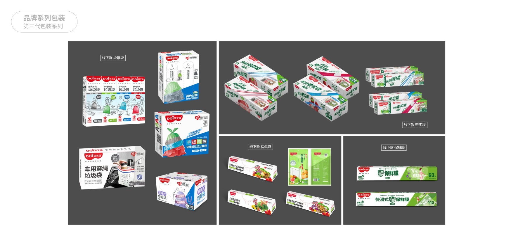
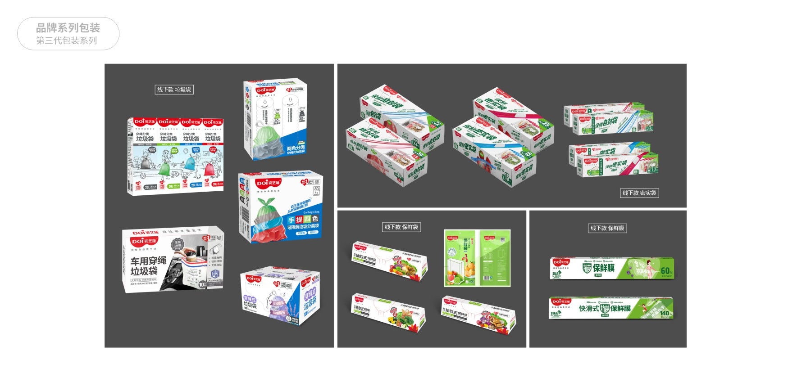

袋芝莲品牌全案策划
服务项目：品牌策划 品牌设计 品牌营销 IP设计
项目背景
袋芝莲是路易（国际）集团有限公司推出的第一款终端品牌，依托20余年的制造经验，在产品开发，设计和生产制造上有强大的优势，产品品质较好，但过去多年来一直从事OEM加工，缺乏品牌运作经验。
保鲜膜市场已有知名品牌（佳能/妙洁）占据用户心理认知，并已成为消费者的习惯和第一选择，而且作为日常生活的一种功能性产品，消费者关注的点更侧重于实用性。虽然在消费升级的趋势下，人们更关注产品以外的东西，比如设计、包装等，但是毕竟作为大众消费品，最广大的消费人群仍是传统的家庭主妇，而她们关心的重点似乎不是这些，如何在这个市场里切割出袋芝莲的细分市场，这才是袋芝莲作为新生品牌首要解决的问题和最大挑战。
袋芝莲面临的问题
品牌定位
做美好的生活伴侣，“袋”给你品质生活
袋芝莲从第一视角关注那些不经意可能会影响心情的小细节，打破了原有的生活用袋产品。
DOI袋芝蓮不同于日常生活消耗品，更是代表一种生活态度与主张，是具有生命力的品牌。通过特别的设计和实用的功能特性，为消费者提供各类生活胶袋产品或其它生活用品，给人类生活带来便利、新鲜、洁净，整体提高人们生活的幸福感。
以“品质”和”环保健康“为原点重新定义生活用袋，和用户的生活息息相关，无时无刻的陪伴，不正是最好的生活伴侣吗！
产品迭代
❐ 合理规划产品线结构
依据市场需求，规划了保鲜膜/保鲜袋、垃圾袋、收纳袋3大品类，十多个系列的生活用袋产品，充分考虑不同细分消费人群需求，针对性提供更加优质的产品，在最大程度上满足消费者生活所需。并将保鲜和清洁系列作为核心品类经营，集中精力和资源进行市场运作。
❐ 打造产品卖点
立足环保、健康、便捷的理念，以“环保可降解”打造产品独特价值卖点，实现产品差异化，通过创新的产品设计和包装，建立起产品的认知印象。
❐ 产品视觉形象呈现
 

品牌logo
 DOI袋芝莲品牌标识的灵感来自于“莲花”
DOI袋芝莲品牌标识的灵感来自于“莲花”
花瓣有其双重含义：第一即代表企业，莲花是灿烂盛开得状态，喻示企业的发展就像这朵盛开得莲花，象征着欣欣向荣和辉煌腾达。
第二代表团队，每片花瓣紧紧相融，喻示着已形成强大得团队得凝聚力、沟通力、互助力，三力聚合才能为企业打造出具有竞争力得优秀品牌。通过不懈的努力打造品牌知名度和美誉度，提升品牌影响力，成为消费者认可得家居用袋品牌。

打造超级IP吉祥物
身穿红色的围裙，头戴红色微卷头发的形象给整个产品加分
将品牌人格化，让他不仅仅只是一个简单的物件或商品，从而和消费者有了进一步的沟通。

官网建设
品牌官网的重磅升级，赋予了其新的活力和生命
站在新的起点，DOI袋芝蓮团队将继续努力，深耕于生活用袋领域，保持产品技术及服务的不断创新，从安全、环保和健康上为客户提供有针对性的优质产品，从而实现品牌的价值，为广大消费者创造出更好的生活用品。


文化墙设计

线上新媒体
通过视频/图文/漫画/海报等多元化方式
加深消费者对品牌的印象
拓宽销售渠道
淘宝天猫/有赞/明星直播带货
新零售业态
在快节奏的生活方式，新零售逐渐成为人们的焦点，消费者通过移动支付就能买单，实现了随拿随走的便利消费体验。
袋芝莲借力新零售红利的增长趋势，打造品牌新业态，建立生活胶袋自助零售机，实现生活胶袋的即时性服务。


首创社区新零售业态——生活胶袋售卖机，聚焦“生活社区”市场，打造“智能终端（场）、商品提供（货）、社区用户（人）”三位一体的运营模式。
最近覆盖小区100米范围以内，真正实现全天候24小时的生活用袋供应，实现生活用袋的即时需求，更好服务小区家庭。
线下营销
入驻商超/户外地推/社区推广/分众广告
【DOI袋芝蓮】的“生活方式化”，运用谐音“袋”，袋给用户品质生活，打造更便捷的生活方式。针对不同的应用场景进行独特化的产品个性设计，让产品更有趣更实用。


济南海右博纳品牌营销咨询有限公司
Copyright 2001-2019 All Rights Reserved Sivibrand.
王伟品牌顾问微信